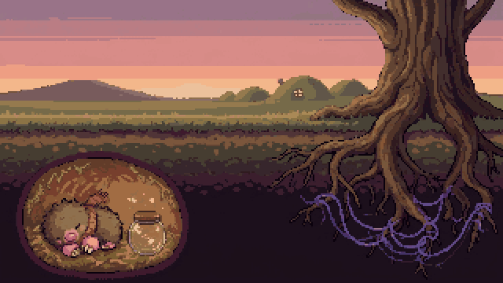
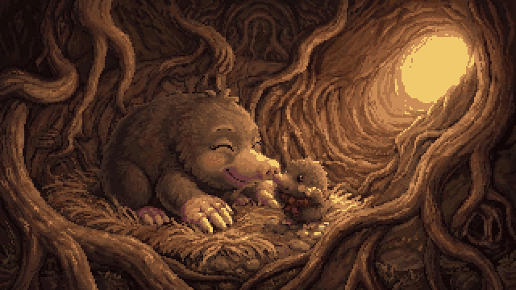
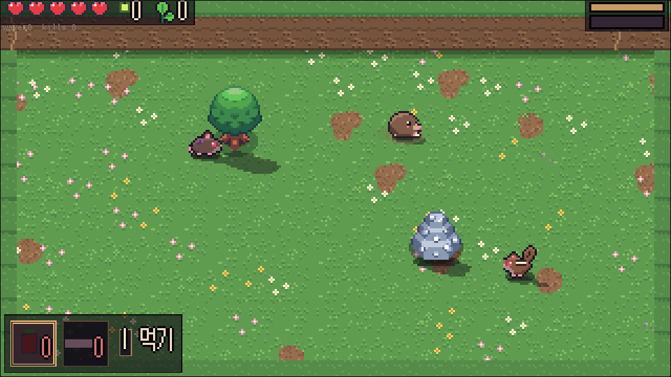
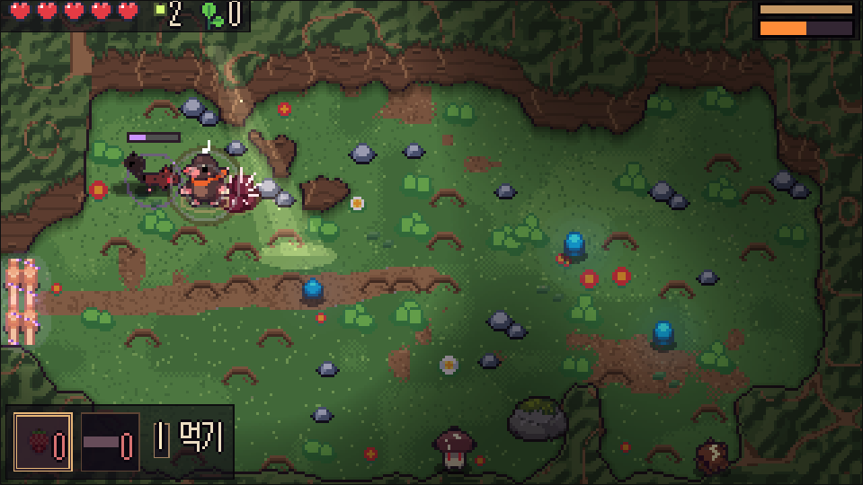
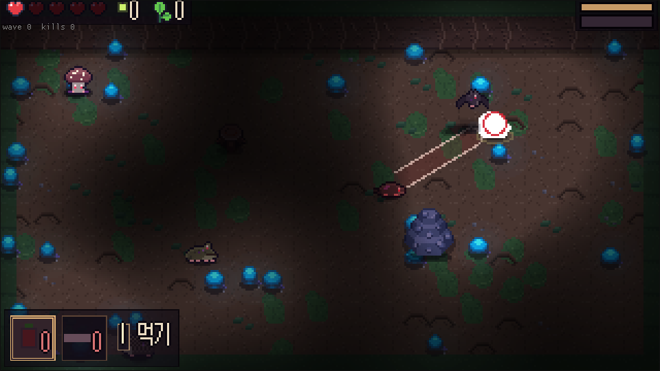
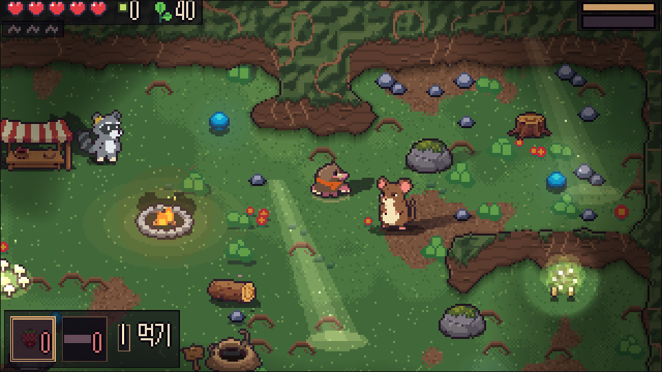
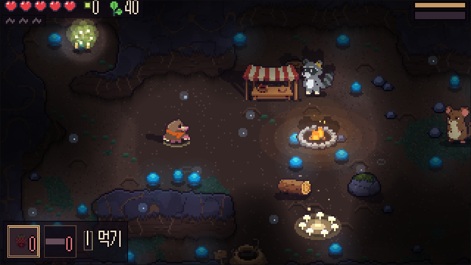

나일
발톱 3연타, 땅속으로 숨는 굴파기, 솟구치기, 드릴.

귀여운 탑다운 액션 로그라이트
큰 나무가 시들어 간다. 뿌리 사이로 보라색 실이 번졌다. 아기 두더지 나일이 처음으로 혼자 굴을 나선다.

이야기
올봄 큰 나무는 잎을 거의 틔우지 못했다. 뿌리를 타고 번진 보라색 실은 땅속 이웃들을 하나씩 감아, 길을 막게 만들었다.
나일은 엄마 굴을 떠나 길잡이 라쿤 포포와 함께 뿌리를 따라 내려간다. 홀린 이웃을 쓰러뜨리면 실이 풀리고, 이웃이 깨어난다.
싸움
두더지라서 할 수 있는 싸움. 손에 익을수록 빨라진다.

지대
지대마다 사는 동물이 다르고, 바닥이 위험해진다. 실제 동물의 습성에서 꺼낸 적들이다.

밝은 풀밭. 물든 들쥐 떼, 도토리를 던지는 다람쥐, 덮치는 청설모.

혀를 쭉 내미는 두꺼비, 두 번 연달아 무는 땃쥐, 몸을 말아 굴러오는 고슴도치. 바닥엔 가시뿌리 덤불.

빛은 나일 곁뿐. 솟구치기가 닿지 않는 박쥐, 포자 구름을 뿜는 포자버섯. 싸우는 동안 천장이 무너진다.
길 지도의 실타래 칸에는 실에 단단히 감긴 센 적이 기다린다. 풀어 주면 장신구를 준다.
길 · 쉼터
쉼터에서 길 지도를 펴고 다음 굴을 고른다. 굴은 매번 새로 파인다. 쉼터는 세 곳이고 구석마다 숨은 자리가 있다. 쓰러져도 맡긴 반딧불은 남고, 두 번째 런부터는 굴 입구 곁에서 바로 시작한다.



이웃들
길 끝마다 실에 홀린 이웃이 길을 막고 있다. 깨운 이웃은 큰 나무 아래 마을에서 다시 산다.

아기 두더지
오늘 처음으로 혼자 굴을 나선다. 발톱과 굴파기가 특기.

라쿤
길잡이이자 쉼터 가게 주인. 씨앗을 받고 물건을 판다.

들쥐 대장
들쥐 마을의 늙은 대장. 남쪽 공터를 지키고 있다.

굴토끼
첫 길 끝에서 세 번 만난다. 나중엔 직접 데리고 내려갈 수 있다.

청설모
둘째 길 끝, 뿌리 엉킨 곳. 묻어 둔 것은 아무에게도 안 준다.

세띠아르마딜로
깊은 곳의 문지기. 아무도 못 지나가게 몸을 만다.

누룩 할매
실을 뜨는 버섯 할매. 실뜨기로 다음 런의 어려움을 고른다.

땅강아지 장인
첫 쉼터 그루터기 곁. 새싹 발톱을 만들어 준다.

마을
모은 반딧불로 큰 나무의 재주를 깨우고, 씨앗으로 마을을 꾸민다. 이웃을 깨울수록 잎이 돋고, 끝내 꽃이 핀다.
두 캐릭터
발톱 3연타, 땅속으로 숨는 굴파기, 솟구치기, 드릴.
뒷발차기, 깡충 피하기, 이어 뛰며 세 번 밟기. 모모만의 재주와 장신구가 따로 있다.
더 있는 것
소리
타이틀은 바이올린과 하프, 마을은 피아노와 바이올린, 쉼터는 피아노 왈츠. 들판과 굴, 보스는 레트로 칩튠으로 긴장을 올린다. 대사와 메뉴에서는 음악이 살짝 물러난다.
누구나
해 보기
아직 만드는 중이다. 기록은 브라우저(웹)나 기기(Android)에 남는다.
nail.apk(arm64)를 받는다.| 동작 | 키보드 | 게임패드 |
|---|---|---|
| 이동 | WASD ←↑↓→ | 왼쪽 스틱 |
| 공격(3연타) | J | X |
| 굴파기 → 솟구침 | K | A |
| 필살기 | L | B |
| 먹기 / 넘기기 | I / Q E | Y / LB RB |
| 지도 / 메뉴 | M / Esc | Select / Start |
조준은 오른쪽 스틱. 설정 → 조작 설정에서 바꿀 수 있다.
자주 묻는 것
웹은 그 브라우저에, Android는 기기에 남는다. 저장 슬롯은 셋이다. 브라우저 데이터를 지우면 웹 기록도 지워진다.
된다. PC·폰 브라우저와 Android에서 패드를 쓸 수 있다. 패드가 붙은 Android 핸드헬드를 염두에 두고 만들었다. iOS는 아직 패드가 안 된다.
된다. 화면에 이동 스틱과 버튼이 나온다. 다만 키보드·패드가 가장 편하다.
쓰러지며 배우는 게임이지만, 쓰러질수록 피해가 줄어드는 "포포의 응원"을 켤 수 있다. 익숙해지면 실뜨기로 어려움을 올린다.
소식